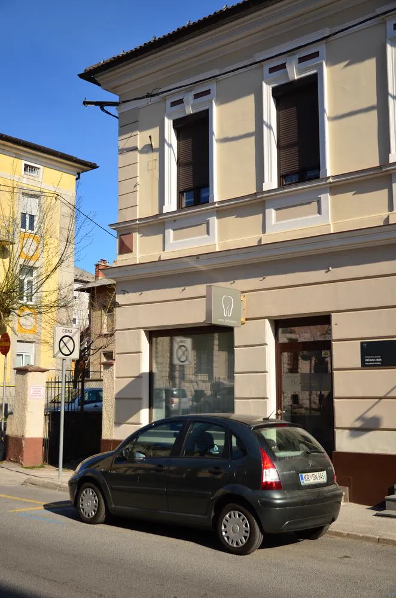
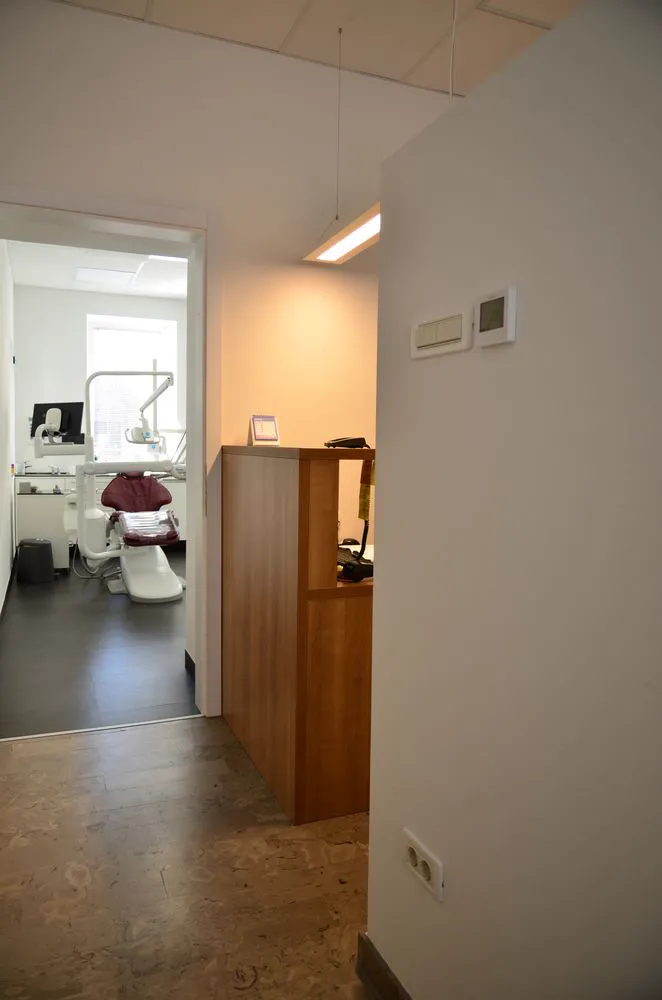
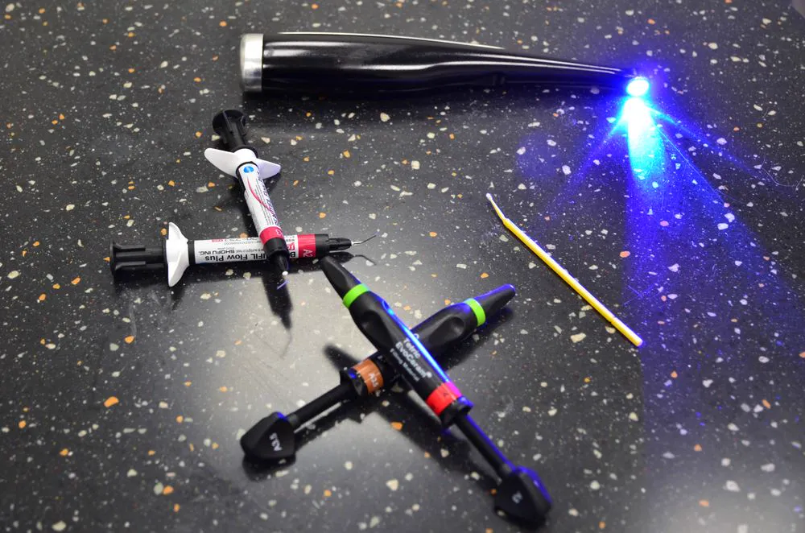
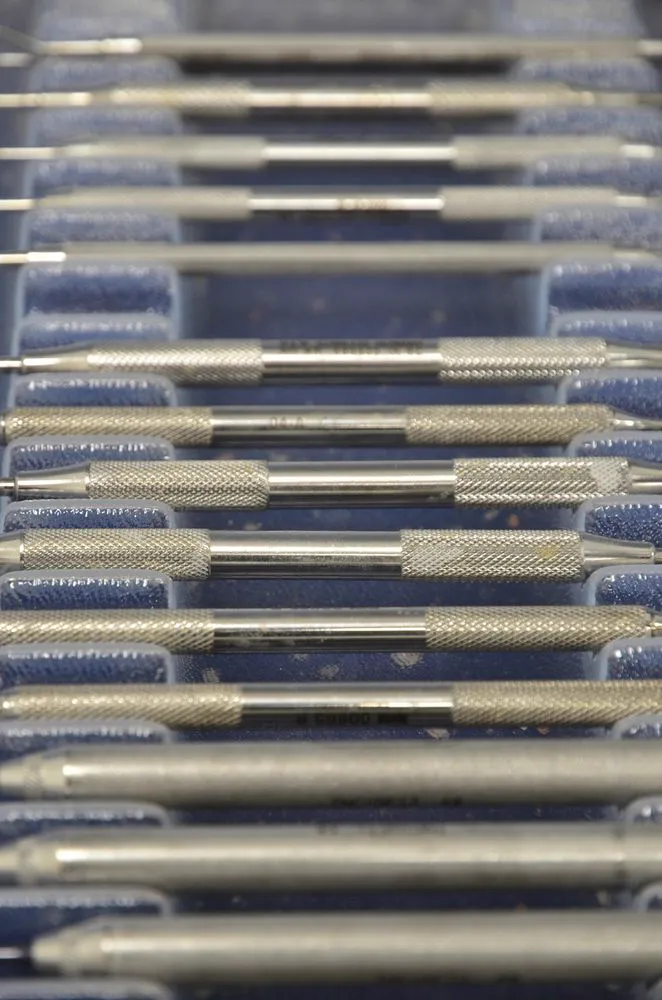
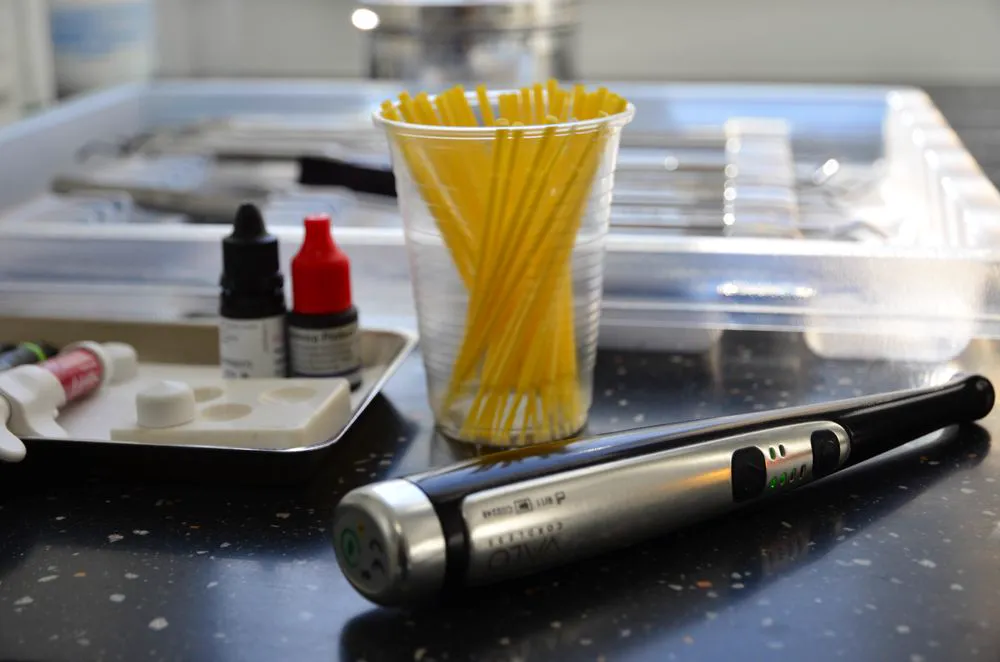

Zobna
ambulanta Fidelitas
Naša ambulanta želi s sodobnimi metodami, tehnikami in aparaturami pacientu omogočiti celotno zobozdravstveno oskrbo v najkrajšem realnem času.



Čakalni seznam
Ambulanta vodi čakalni seznam za storitve ZZZS in objavlja čakalne dobe.
Digitalni rentgen
Slikanje zob z računalniško podprtim rentgenskim aparatom (RVG).
Mateja Cep dr.dent.med.
Strokovni izpit leta 2005, kmalu zatem delo v ambulanti Fidelitas.
V registru od 2003
Fidelitas d.o.o., datum vpisa 6. 5. 2003.
Storitve
Nudimo naslednje zobozdravstvene storitve. V naši praksi uporabljamo sodobno zobozdravstveno opremo.
Na vašo željo oziroma kadar sodimo, da je to potrebno, vam ponudimo lokalno anestezijo.
Kako delamo
Uporabljamo sodobno opremo.
Digitalni rentgen
Natančnejšo sliko posameznega zoba in obzobnih tkiv naredimo z aparatom RVG (radioviziografijo). To je tehnika slikanja zob z računalniško podprtim rentgenskim aparatom. Slika je takoj na zaslonu in jo shranimo v pomnilnik računalnika.
Implantati
V sodelovanju s specialistom vam pri nas vsadimo tudi implantate.
Sterilizacija
Vse, kar uporabimo pri delu, je ali sterilizirano ali se po prvi uporabi odvrže.



Ambulanta
Kdo vas sprejme.

Mateja Cep
Po končanem študiju dentalne medicine na Medicinski fakulteti v Ljubljani sem leta 2005 opravila strokovni izpit, slabo leto kasneje pa sem začela delati v zobozdravstveni ambulanti Fidelitas. Svoje znanje redno nadgrajujem na različnih strokovnih srečanjih.

Klara Lampe
ZZZS
Čakalne dobe za ZZZS konzervativo znašajo 2 meseca, za protetiko pa 3 mesece. Število evidentiranih zavarovanih oseb na dan 27. 7. 2025 je 1631.
Pooblaščena oseba za vodenje čakalnega seznama je Mateja Cep dr.dent.med., dosegljiva v času ordinacijskih ur ambulante.
Podatki, kot so objavljeni na fidelitas.si (preverjeno 21. 11. 2026).
Urnik
Ordinacijski čas, kot je objavljen na fidelitas.si (preverjeno 21. 11. 2026). Pred obiskom preverite morebitne spremembe.
Naročanje
Naročite se lahko neposredno v ambulanti v ordinacijskem času ali pa nas pokličete, oziroma nam pišete na e-naslov.